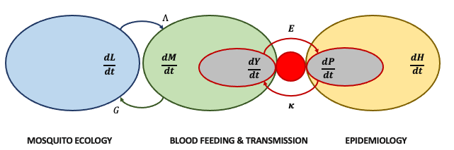

Micro-MoB (Microsimulation for mosquito-borne pathogens)
Source:vignettes/MicroMoB.Rmd
MicroMoB.RmdIntroduction
Micro-MoB is a software package which implements a framework for building mathematical models of mosquito-borne pathogen transmission (MBPT). The framework is flexible enough to model real scenarios while at the same time places constraints upon how parts of the framework interact so that the software does not become obfuscatingly complex each time a new feature must be added.
The framework defines components which have an interface. The components cover all parts of MBPT models: adult mosquitoes, immature (aquatic) mosquitoes, resident humans, non-resident visitors, and other blood hosts. A specific instantation of a component is called a model. For example, the Ross-Macdonald model of adult mosquito dynamics can fulfill the adult mosquito interface and thus fill that component “box”. Certain computations that involve the passing of information between components are invariant, such as the bloodmeal, where a matrix is computed describing how bites from mosquitoes are distributed across hosts. These computations use the generic component interface, so any model fulfilling an interface can fit seamlessly into the existing set of models.
Software design
To accomplish this component-interface design in R, we use the S3 object system. Each component is a named element in the model object (an environment). The interface defines a set of generic functions which dispatch on the specific class of the object taking the place of that component.
Components

The model is broken into components, for humans, immature and adult mosquitoes (and some others). Each component has an interface, which are methods which must be defined for that component. A component’s interface is stored in file, for example, R/humans_interface.R shows the user what methods must be defined for any human model. Other components (e.g. the bloodmeal) will call generic methods not knowing what specific code is implementing them, and so they must return values consistent with their definition.
We call a specific implementation of a component a model. Specific implementations are found in files that replace _interface with the model name, for example R/humans_SIR.R. Their accompanying test files are located in tests/testthat. If you are creating a new model, please remember to test it adequately.
We list the components which require interfaces below and specific models to implement them.
Mosquitoes
The mosquito component is responsible for all dynamics which update adult mosquito populations. The interface is defined in R/mosquito_interface.R.
Aquatic
The aquatic component is responsible for all dynamics which update immature (aquatic stage) mosquito populations. The interface is defined in R/aquatic_interface.R.
Humans
The human component updates human populations. The interface is defined in R/humans_interface.R.
Invariants
Bloodmeal
We describe how the bloodmeal algorithm works in a separate article, vignette("bloodmeal")